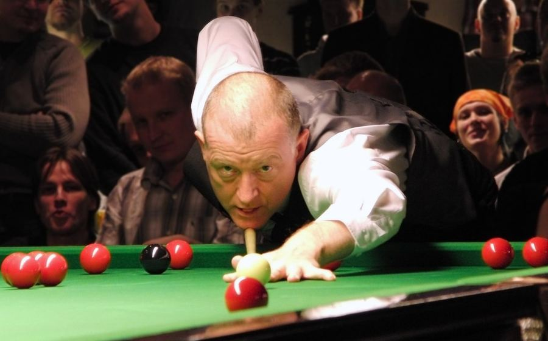

Di balik gemerlap panggung biliar nasional, sejumlah atlet Indonesia telah membuktikan kualitas mereka hingga ke level Asia. Konsistensi latihan, jam terbang di berbagai turnamen domestik, dan mentalitas bertanding yang matang menjadi modal utama para pemain ini dalam bersaing dengan atlet-atlet unggulan dari negara lain.
Sebagian besar atlet biliar nasional yang kini berprestasi di Asia memulai kariernya dari turnamen-turnamen lokal dan klub biliar di kota masing-masing. Proses pembinaan bertahap ini terbukti efektif melahirkan pemain dengan fundamental teknik yang kuat, mulai dari penguasaan cue ball control hingga strategi safety yang matang. Tak sedikit dari mereka yang juga sempat unjuk gigi di ajang seperti yang dibahas dalam rekap hasil Turnamen 9-Ball Nasional sebelum akhirnya melangkah ke kompetisi internasional.
Di level Asia, atlet biliar Indonesia telah beberapa kali menembus babak semifinal dan final pada kejuaraan bergengsi kawasan. Pencapaian ini tidak lepas dari peningkatan kualitas kompetisi domestik serta dukungan program pelatihan yang semakin terstruktur dari federasi biliar nasional. Berikut ringkasan pencapaian yang menjadi sorotan dalam beberapa tahun terakhir:
| Ajang | Capaian | Catatan |
|---|---|---|
| Kejuaraan Asia (edisi terbaru) | Semifinal | Kalah tipis dari wakil tuan rumah |
| Turnamen invitasi regional | Juara | Menang atas unggulan pertama |
| Kejuaraan Asia (edisi sebelumnya) | Perempat final | Debut pertama di level Asia |
Para pelatih menilai kunci utama konsistensi performa atlet biliar nasional terletak pada kombinasi latihan teknis rutin dan pengalaman bertanding yang terus diasah lewat berbagai kompetisi, termasuk pemahaman mendalam terhadap perbedaan aturan 8-ball dan 9-ball yang kerap dipertandingkan dalam format berbeda di setiap turnamen. Penguasaan kedua format ini memberi fleksibilitas strategi yang signifikan saat menghadapi lawan dengan gaya bermain berbeda.
Selain biliar, semangat kompetitif serupa juga terlihat pada cabang olahraga strategi lain seperti liputan poker kompetitif maupun ketangguhan fisik dalam dunia tinju yang rutin diulas Nusantaratoto. Ke depan, federasi berharap semakin banyak talenta muda yang mengikuti jejak para senior ini untuk mengharumkan nama Indonesia di kancah internasional.
Nusantaratoto akan terus menghadirkan liputan mendalam seputar perjalanan para atlet biliar Tanah Air. Simak juga informasi lebih lanjut mengenai redaksi kami di halaman tentang kami.
Perjalanan panjang menuju level Asia juga tak lepas dari peran pelatih dan tim pendukung yang mendampingi para atlet dalam setiap sesi latihan intensif. Analisis rekaman pertandingan, evaluasi pola pukulan, hingga simulasi tekanan mental menjelang laga besar menjadi bagian rutin dari persiapan mereka. Kombinasi antara kerja keras individu dan dukungan sistem pembinaan yang semakin profesional inilah yang pada akhirnya membawa nama Indonesia semakin diperhitungkan di kancah biliar Asia.